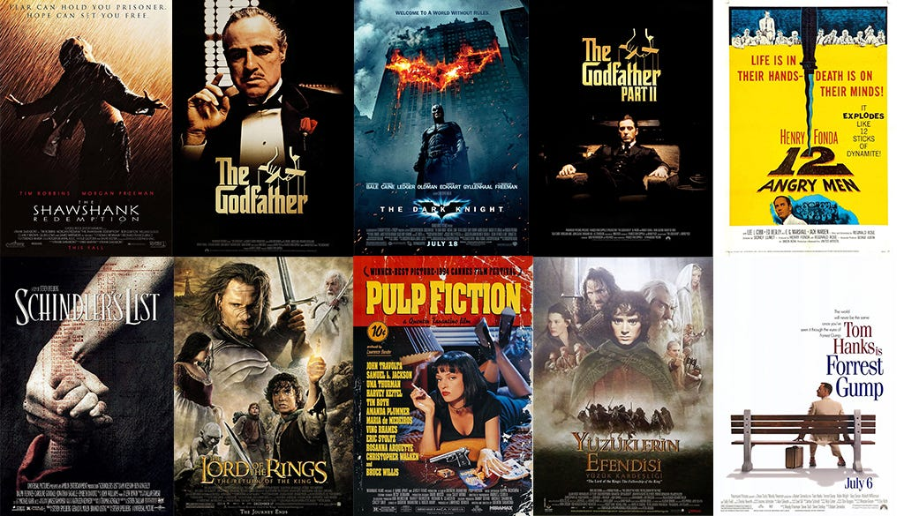

Description: In this culminating project, I queried the Chinook database, a database extracted from Kaggle.com that represents a digital media store. This database contains information on artists, albums, media tracks, invoices, customers, and employees.
Skills: Data Retrieval & Filtering, Joins & Relationships, Aggregation & Grouping, Sorting & Ranking, Pattern Matching, and Data Formatting.
Description: In this project, I analyzed data from Fortune 500 companies, rating companies on “Mom-friendliness,” identifying top companies, average employee tenure by industry, and employee tenure.
Skills: Data Aggregation & Grouping, Conditional Logic & Classification, Ranking & Sorting.

Description: A collection of Vizzes I have created and published on Tableau Public.
Skills: Data Visualization, Data Preparation, Data Analysis, Technical Analysis.

Description: In this project, I used SQL to query a database quantify statistics about customer and order data.
Skills: Data Querying & Filtering, Data Aggregation, Joins, Grouping & Sorting, Conditional Logic & Grouped Insights.

Description: In this project, I extracted a dataset from Kaggle.com containing movie data from IMDB. I analyzed movie ratings and earnings across different age groups and genres.
Skills: Data Cleaning, Null Handling, Joins, Ranking & Sorting, Conditional Filtering, Data Aggregation.